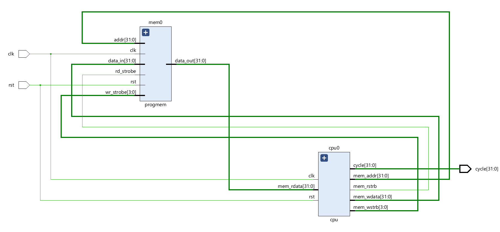
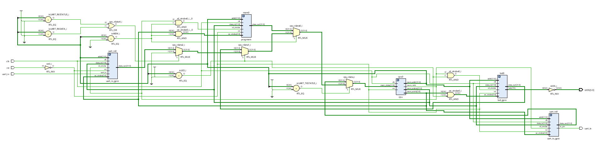

Design, integration and bring-up of a RISC-V soft core with a unified peripheral bus in Verilog
This report documents a RISC-V soft processor and the system-on-chip built around it. The core implements the RV32I base integer instruction set as an eight-state multi-cycle finite state machine, with a 32-entry register file, full sub-word load and store support with sign and zero extension, and the complete branch and jump set. The processor drives a single unified address/data bus with byte-granular write strobes, onto which four devices are decoded: a 4 KB program memory, an LED GPIO controller, and memory-mapped wrappers around a UART transmitter and receiver. Peripheral registers are reached by ordinary lw and sw instructions rather than dedicated I/O opcodes, so no ISA extension is required. The system was brought up with a hand-assembled firmware image that performs an arithmetic sequence and writes the result to the LED region, and verified by unit-level simulation in Icarus Verilog with waveform inspection in GTKWave, bus-level tracing of every store transaction, and schematic elaboration in Vivado.
The goal was to build a working processor from the instruction set upward — not to instantiate a vendor soft core — and then to extend it into a system that talks to the outside world. That second half is where most of the engineering lies: a CPU that only executes arithmetic in a register file cannot be observed, so the project is really about the bus, the address decoding and the peripheral interfaces that make execution visible.
Two configurations were built and elaborated. The first is a minimal bring-up system of processor plus program memory, used to validate instruction fetch, decode and execution in isolation. The second adds the peripheral fabric: address decoding, a read-back multiplexer, and three memory-mapped devices.

cpu core and progmem connected directly, with the instruction/data bus (mem_addr, mem_rdata, mem_wdata, mem_rstrb, mem_wstrb) closed in a loop and the internal cycle counter brought out to a port for observation. No address decoding is present, so every access targets memory.The core decodes all six RV32I instruction formats. Opcode classification is done on data[6:2], since the low two bits are constant for the base ISA:
| Class | Instructions | Notes |
|---|---|---|
| R-type | ADD, SUB, XOR, OR, AND, SLT, SLTU, SLL, SRL, SRA | Register-register ALU; SUB and SRA selected on funct7[5] |
| I-type | ADDI, XORI, ORI, ANDI, SLTI, SLTIU, SLLI, SRLI, SRAI | Shift amount taken from the low five bits of the immediate |
| Load | LB, LH, LW, LBU, LHU | Sign or zero extension selected by data[14] |
| Store | SB, SH, SW | Byte-granular write mask generated from address bits [1:0] |
| Branch | BEQ, BNE, BLT, BGE, BLTU, BGEU | Signed and unsigned comparison from a shared subtractor |
| Jump | JAL, JALR | Return address PC+4 written to rd |
| Upper immediate | LUI, AUIPC | AUIPC adds the U-immediate to the current PC |
| System | SYSTEM opcode | Enters a terminal HLT state; used as a program-end marker |
Five immediate generators run in parallel on every fetched word, each sign-extending from bit 31 and reassembling the scattered immediate fields defined by the format — including the bit-swizzling required for B-type and J-type, where the immediate is stored out of order to keep the register specifiers in fixed positions across formats.
Control is an eight-state finite state machine rather than a pipeline. This trades throughput for simplicity: because only one instruction is in flight at a time, there are no data hazards, no forwarding paths and no branch misprediction to handle.
| State | Code | Action |
|---|---|---|
| RESET | 0 | Entry state after reset release |
| WAIT | 1 | Assert mem_rstrb; memory read latency absorbed here |
| FETCH | 2 | Latch mem_rdata into the instruction register |
| DECODE | 3 | Read rs1 and rs2 from the register file |
| EXECUTE | 4 | Compute ALU result, resolve branch, update PC, write back ALU results |
| BYTE | 5 | Present the load/store address on the bus |
| WAIT_LOADING | 6 | Drive mem_wstrb for stores; write back load data |
| HLT | 7 | Terminal state; freezes the cycle counter |
ALU, branch and upper-immediate instructions complete the loop WAIT → FETCH → DECODE → EXECUTE → WAIT in four cycles. Loads, stores and both jump instructions take the extended path through BYTE and WAIT_LOADING, costing six cycles. A free-running cycle counter increments in every state except HLT, giving a simple execution-time measurement for firmware.
Shared subtractor. A single 33-bit subtraction {1'b0, a} + {1'b1, ~b} + 1 serves three purposes: the SUB result, the borrow-out in bit 32 as the unsigned less-than flag, and a zero test across bits [31:0] as the equality flag. Signed comparison is derived by checking whether the operand sign bits differ — if they do, the sign of the first operand decides; if not, the borrow-out decides.
Sub-word access. Loads extract the addressed halfword using address bit 1, then the addressed byte using bit 0, and sign- or zero-extend according to funct3. Stores generate a four-bit write mask positioned by the same address bits, and replicate the source byte across the appropriate lanes of mem_wdata so that the memory needs no barrel shifter of its own — the alignment work is done entirely on the CPU side.
Register file. Thirty-two 32-bit registers with a hardwired zero: the write-enable term is qualified with rd != 0, so writes to x0 are silently discarded as the ISA requires. Write-back is enabled in EXECUTE for ALU, jump and upper-immediate instructions, and deferred to WAIT_LOADING for loads, where the returned data is available.
All four devices share one address bus, one write-data bus, one read strobe and one four-bit write strobe. Device selection is a comparison on the top four address bits, which makes each decoder a single 4-bit equality comparator at the cost of dividing the space into sixteen coarse 256 MB regions. Read data is returned through a priority multiplexer at the top level that selects among the program memory, the LED register, the UART TX status register and the UART RX data/status registers.
| Base address | addr[31:28] | Device | Register | Access |
|---|---|---|---|---|
| 0x0000_0000 | 0000 | progmem | 1024 × 32-bit word array | R / W |
| 0x1000_0000 | 0001 | led_gpio | LED data register (low 8 bits used) | R / W |
| 0x2000_0000 | 0010 | uart_tx_gpio | TX DATA — byte to transmit | W |
| 0x3000_0000 | 0011 | uart_tx_gpio | TX CTRL — bit 0 = valid / start | W |
| 0x4000_0000 | 0100 | uart_tx_gpio | TX STATUS — bit 0 = ready | R |
| 0x5000_0000 | 0101 | uart_rx_gpio | RX DATA — received byte | R |
| 0x6000_0000 | 0110 | uart_rx_gpio | RX CTRL — bit 0 = ready / acknowledge | W |
| 0x7000_0000 | 0111 | uart_rx_gpio | RX STATUS — bit 0 = data valid | R |
Because peripheral registers live in the ordinary load/store address space, firmware drives them with plain lw and sw instructions and no I/O-specific opcodes are needed. The two UART wrappers perform their own internal address decoding, so the top level passes them the unqualified strobes; the memory and LED controller receive strobes already gated by their region select.

isMEM, isLED, isUART_RXDATA, isUART_RXSTATUS, isUART_TXSTATUS) and the AND terms that gate each device's read and write strobes. Centre: the read-back path, inferred as a cascade of four multiplexers (cpu_rdata0_i through cpu_rdata_i) plus an OR term merging the two UART receive regions, feeding the selected device's data back to the core. Right: cpu0, mem0, uart_rx0, uart_tx0 and led0 all attached to the same address and write-data buses, with uart_tx, uart_rx and LEDS[5:0] leaving the chip through the active-low inverter. This is the post-fix netlist: led0.data_out[31:0] now drives the read-back cascade, adding the fourth multiplexer stage. In the earlier elaboration that port was left dangling and a load from the LED region returned zero — the behaviour described in §4.2 and now asserted continuously by Test 1 in §6.2.A 1024-word (4 KB) synchronous array serving as both instruction and data store. Reads are word-wide and registered; writes are byte-granular, with each bit of wr_strobe enabling one byte lane so that sb and sh do not corrupt neighbouring bytes. The word index is addr[31:2], discarding the two low bits. Contents are initialized from firmware.hex via $readmemh at simulation start.
A single 32-bit register whose low eight bits drive the LED pins. The top level inverts the outputs before they leave the chip, since the LEDs on the target board are active-low. The register is both readable and writable, so firmware can read-modify-write individual bits. The read and write paths are independent rather than chained, so a read asserted in the same cycle as a write cannot suppress the write; a simultaneous access returns the pre-write value.
A parameterized 8N1 transmitter. The baud divider is computed at elaboration as clk_freq_hz / baud_rate — 2812 cycles per bit for the default 27 MHz clock at 9600 baud — and the counter width is derived with $clog2, so retargeting to another clock or baud rate requires only a parameter change.
The frame is held in a 10-bit shift register loaded as {stop, data[7:0], start} and shifted right on each baud tick, so bits leave LSB-first in the correct UART order. The output expression data[0] | !(|data) drives the line to its idle-high state whenever the shift register has drained, avoiding a separate idle-state flag. A ready handshake tells the wrapper when the next byte may be loaded.
A five-state receiver: IDLE → START → REC_BYTE → STOP → DATA. Two cascaded flip-flops both synchronize the asynchronous serial input and provide falling-edge detection to spot the start bit. Each data bit is sampled at CYCLE/2, the midpoint of the bit period, which is the standard defence against edge jitter and small baud mismatches. After the stop bit the receiver parks in DATA holding rx_data_valid high, and only returns to IDLE once firmware acknowledges by writing the RX control register — a valid/ready handshake that prevents a byte being overwritten before software has read it.
The system is exercised by a firmware image loaded into program memory at elaboration. It performs a register-register arithmetic sequence, forms a peripheral base address with lui, and writes the result to the LED region — touching the ALU, the register file, immediate generation, PC sequencing and the memory-mapped store path in eight instructions. The image is assembled from commented source (firmware_led.s) by the small RV32I assembler described in §7.1; a second image, firmware_uart.s, drives the UART echo test in §6.2.
| PC | Encoding | Disassembly | Effect |
|---|---|---|---|
| 0x00 | 00500093 | addi x1, x0, 5 | x1 ← 5 |
| 0x04 | 00700113 | addi x2, x0, 7 | x2 ← 7 |
| 0x08 | 002081b3 | add x3, x1, x2 | x3 ← 12 |
| 0x0C | 10000237 | lui x4, 0x10000 | x4 ← 0x1000_0000 (LED base) |
| 0x10 | 00322023 | sw x3, 0(x4) | LED register ← 12 |
| 0x14 | 0000006f | jal x0, 0 | spin in place (program end) |
| 0x18 | 00000013 | nop | padding |
| 0x1C | 00000013 | nop | padding |
The expected observable result is that the LED register holds 12 = 0b0000_1100, lighting LED 2 and LED 3 once the active-low inversion at the pins is accounted for. Because the store targets 0x1000_0000, it also confirms that the address decoder routes the transaction to the LED controller rather than to program memory, and that sw asserts all four write-strobe bits.
Unit-level simulation. The LED GPIO was exercised by a dedicated testbench in Icarus Verilog with the waveform dumped to VCD and inspected in GTKWave. The trace confirms the full register cycle: with addr = 0x1000_0000 and wr_strobe = 4'b1111, the value 0x3C presented on data_in is latched into led_data_reg on the next rising edge and appears immediately on the leds output; a subsequent read with rd_strobe asserted returns 0x3C on data_out. Both the write path and the read-back path are therefore covered.
time (ns) rst wr_strobe rd_strobe addr data_in led_data_reg leds data_out 0 1 x x x x x x x 10 0 1111 0 0x10000000 0x3C — — — 15 0 1111 0 0x10000000 0x3C 0x3C 0x3C — 20 0 0000 0 0x10000000 0x3C 0x3C 0x3C — 30 0 0000 1 0x10000000 0x3C 0x3C 0x3C — 35 0 0000 1 0x10000000 0x3C 0x3C 0x3C 0x3C
Bus-level transaction tracing. The core is instrumented so that every store, at the point where the write strobe is actually driven, prints its state, target address, generated byte mask, final mem_wstrb and write data. This produces a transaction log that can be read directly against the firmware listing to confirm that each memory-mapped write lands at the intended peripheral with the correct mask — the mechanism by which sub-word store alignment was debugged.
Structural elaboration. Both configurations were elaborated in Vivado to confirm the intended structure was inferred: that the register file synthesizes as expected, that exactly one comparator is generated per address region, and that all peripherals attach to a single shared bus rather than being accidentally duplicated. Figures 1 and 2 are those elaborated schematics.
System-level simulation of the firmware exposed a defect that unit-level testing of the peripherals could not: the store at 0x10 was reaching address 0x00000000 instead of the LED base at 0x10000000, so the LED register never received its value and the program appeared to do nothing.
The cause was operand-independent and structural. For loads, stores and JALR, the funct3 field encodes the access width rather than an ALU function, so those encodings alias onto the arithmetic cases. In the original priority chain the address-generation term was placed last, which meant the aliases won:
| Instruction | funct3 | Matched case | Computed | Required |
|---|---|---|---|---|
| SW | 010 | SLT | comparison flag | base + offset |
| LH, LHU | 001 | SLL | shifted value | base + offset |
| LBU | 100 | XOR | bitwise XOR | base + offset |
| SB (offset bit 10 set) | 000 | SUB | difference | base + offset |
The ~isLtype and ~isStype guards scattered through the chain had been added as point fixes for individual collisions, which is why LW and SH happened to work while their siblings did not. The correct fix is structural rather than case-by-case: test (isStype | isLtype | isJALR) first and unconditionally select the adder, because for that entire instruction class the ALU has only one job. With the address term promoted, the downstream guards become redundant and were removed.
A second conformance defect was found in the same pass: the R-type shift amount was taken from the full 32-bit rs2 value rather than its low five bits, so any SLL, SRL or SRA with rs2 ≥ 32 returned zero instead of shifting by rs2 mod 32 as the specification requires.
After both fixes the firmware behaves as intended. The store issues to 0x10000000 with mem_wstrb = 4'b1111 and mem_wdata = 0x0000000C, the LED register reads back 12, and the output pins settle at 6'b110011 — the active-low encoding of 12.
CPU STORE: mem_addr = 10000000 <- LED base, correctly decoded mem_wstrb = 1111 <- full-word store mem_wdata = 0000000c <- 12 led_data_reg = 12 LEDS = 110011 <- active-low 12, LED2 and LED3 lit
The wider lesson is the one worth recording: a peripheral can be correct in isolation and a processor can execute arithmetic correctly, while the interface between them is still broken. Only running real firmware across the assembled bus surfaced it.
The defect in §6.1 was invisible to unit-level testing, so a self-checking system-level testbench (tb_soc.v) was added to close that gap permanently. It elaborates two instances of the SoC, each preloaded with a different firmware image, and asserts the resulting architectural state automatically.
Test 1 — LED store path. Runs the bring-up firmware and checks that the LED register receives 12, that the output pins settle at the active-low encoding 6'b110011, and — via a continuous assertion on the bus — that whenever the LED region is addressed, cpu_rdata actually presents led_rdata rather than falling through to zero.
Test 2 — UART echo. Runs a firmware image that polls the receiver status register, reads the byte, mirrors it to the LEDs, performs the acknowledge handshake, then polls the transmitter and sends the byte back. The testbench drives a genuine 9600-baud frame into uart_rx (2,812 clocks per bit at 27 MHz) and independently recovers the frame that emerges on uart_tx by sampling at each bit midpoint. Because the firmware can begin retransmitting while the inbound stop bit is still on the wire, the receive monitor is forked before transmission starts; both tasks are declared automatic so their loop state is not shared between the concurrent threads.
========================================================== RV32I SoC -- system-level testbench 2812 clocks per bit (27 MHz / 9600 baud) ========================================================== ---- TEST 1: LED store path (firmware.hex) ---- [ PASS] LED register holds 5 + 7 [ PASS] LED pins show active-low 12 [ PASS] store decoded to LED region ---- TEST 2: UART echo (firmware_uart.hex) ---- driving 0x5a into uart_rx ... [ PASS] received byte mirrored to LEDs waiting for uart_tx to echo it back ... recovered 0x5a from uart_tx [ PASS] echoed byte matches ========================================================== checks run : 5 failures : 0 RESULT : *** ALL TESTS PASSED *** ==========================================================
This is the first evidence that the UART peripherals work functionally rather than merely elaborating correctly: a byte makes the complete round trip from an external serial line, through the receiver, across the bus into the register file, back out across the bus to the transmitter, and onto the serial line again — driven entirely by firmware using ordinary loads and stores.
top SoC: address decode, read-back mux, pin inversion │ ├── cpu RV32I multi-cycle core, 8-state FSM, 32×32 register file ├── progmem 1024-word unified instruction/data memory ├── uart_tx_gpio memory-mapped TX wrapper (DATA / CTRL / STATUS) │ └── uart_tx 8N1 transmitter, parameterized baud divider ├── uart_rx_gpio memory-mapped RX wrapper (DATA / CTRL / STATUS) │ └── uart_rx 8N1 receiver, 5-state FSM, mid-bit sampling └── led_gpio 8-bit LED output register
| File | Role |
|---|---|
| top.v | SoC integration, address decoding, read-back multiplexing |
| cpu.v | RV32I core: decode, immediates, ALU, branch logic, FSM, register file |
| progmem.v | Program/data memory with byte-enable writes and $readmemh init |
| uart_tx.v / uart_tx_gpio.v | UART transmitter and its memory-mapped register interface |
| uart_rx.v / uart_rx_gpio.v | UART receiver and its memory-mapped register interface |
| led_gpio.v | LED output register peripheral |
| tb_soc.v | Self-checking system-level testbench: LED store path and UART echo |
| asm.py | Minimal RV32I assembler; --selftest validates it against the known-good image |
| firmware_led.s / firmware.hex | Bring-up program source and assembled image (listing in §5) |
| firmware_uart.s / firmware_uart.hex | UART echo program source and assembled image |
| tb_led_gpio.vcd | GTKWave trace of the LED GPIO unit test |
python asm.py --selftest # verify the assembler python asm.py firmware_led.s firmware.hex python asm.py firmware_uart.s firmware_uart.hex iverilog -I. -o tb_soc.out tb_soc.v top.v vvp tb_soc.out # expect: ALL TESTS PASSED (5 checks)
The firmware images were originally hand-encoded hex with no recorded source. They are now generated from commented assembly by asm.py, which is validated by regenerating the original bring-up image and comparing it word for word against the known-good encoding. Program memory takes the image name as a parameter, so a testbench can select a firmware without editing the RTL.
The following are deliberate simplifications rather than defects, recorded here because they define the boundary of what the design does.
progmem, so the design is von Neumann rather than Harvard. With a multi-cycle core this causes no structural hazard, because fetch and data access occur in different states.addr[31:28] gives sixteen regions of 256 MB each, and every peripheral register aliases across its entire region. This is wasteful of address space but reduces each decoder to one 4-bit comparator — a reasonable trade at this scale.rst port of top is documented as active-high, but every submodule is instantiated as .rst(!rst), making the external pin active-low in practice. The behaviour is consistent throughout; only the comment is wrong.$display statements in the core are ignored by synthesis but should be guarded or removed before an FPGA build.